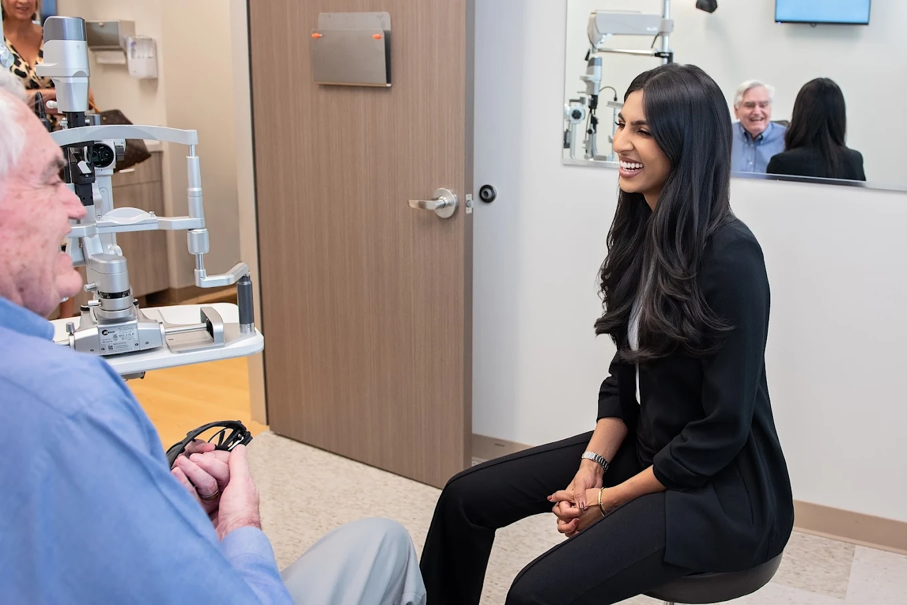

(346) 818-6780
Schedule Consultation
Our Practice
Soni Vision Institute was built on a simple belief: patients deserve elite surgical care delivered with genuine compassion. Meet the team behind Houston's highest-rated eye surgery practice.

Our Story
Soni Vision Institute began with a vision to create something different in Houston's ophthalmology landscape — a practice where surgical excellence and personal attention were never in conflict.
As a surgical-only practice, we don't dilute our focus with optical retail or high patient volumes. Every resource, every hour, every decision is made in service of one goal: the best possible outcome for each patient who walks through our doors.
The result speaks for itself. A 4.95-star rating across 500+ Google reviews — the highest of any eye surgery practice in Greater Houston.
Schedule a ConsultationFounder & Lead Surgeon
Dr. Ruhi Soni is a board-certified ophthalmologist and the founder of Soni Vision Institute. She completed her fellowship training in complex anterior segment surgery, equipping her with the expertise to handle the most challenging cataract and corneal cases in Greater Houston.
What sets Dr. Soni apart is not just her technical precision — it is the depth of care she brings to every patient relationship. She takes the time to understand not just the clinical picture, but each patient's life, goals, and fears.
Dr. Soni is fluent in English, Hindi, and Gujarati, and serves a diverse patient community across Cypress, Katy, and the greater Houston area.
Advanced fellowship in complex anterior segment and corneal surgery
American Board of Ophthalmology certified
Premium IOL implantation, complex cataract surgery, corneal disease


Surgeon & Partner
Dr. Nikitha Reddy is a fellowship-trained ophthalmologist whose reputation for precision and patience has made her one of Houston's most trusted eye surgeons. She joined Soni Vision Institute to bring her expertise in cataract surgery, LASIK, and EVO ICL to a practice that matched her own standards.
Patients consistently describe Dr. Reddy as thoughtful, unhurried, and exceptionally skilled. She believes the best surgical outcomes begin long before the operating room — in thorough evaluation, honest conversation, and a plan built around each individual patient.
Dr. Reddy is fluent in English and Telugu and has a deep commitment to serving Houston's diverse communities.
Fellowship-trained in cataract and refractive surgery
American Board of Ophthalmology certified
LASIK, EVO ICL, advanced cataract surgery, refractive procedures
In the Clinic
From your first consultation to your last follow-up, you will work directly with your surgeon — not a resident, not a rotating provider. We see fewer patients so we can give each one more.
Our clinic was designed to feel calm, unhurried, and welcoming. Because we believe the patient experience matters just as much as the surgical outcome.
Every patient receives a treatment plan built around their specific vision goals, lifestyle, and anatomy.
Consistency builds trust. You will see the same doctor from consultation through post-operative care.
We use the latest imaging and biometry equipment to ensure precise measurements and optimal outcomes.

Schedule your consultation with Houston's highest-rated eye surgery team. Most patients are seen within one week.